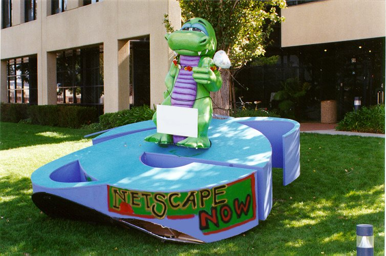

Modules
VIDEO
©2014 Seth van Hooland and Ruben Verborgh
Let us now go through the four data models we announced in the video at a slower pace,
taking into account the possibilities and limits of each model. From top to bottom,
left to right, this image represents tabular data, relational databases, XML
and RDF. For each model, we’ll ask ourselves the same set of questions, so that
you understand the characteristics of each model.
Comparing data models
World view of each model
Models helps us to make abstraction of reality. You may think of a data model as a
particular pair of glasses, influencing the way in which you see the world
Implementation and serialization formats
Models are made concrete through file formats, query languages and software
How does the model address updates and sharing?
Models and serialization formats
Tabular data CSV, TSV
Relational model binary files
Meta-markup languages SGML, XML
RDF Turtle, N-Triples, RDF-XML
First model: tabular data
Also referred to as flat files
Intuitive approach to organize data
Represents the world in one big gigantic table or spreadsheet
Consists of columns and rows, their intersection gives meaning to the data
Tabular data—example
Title
Creator
Date
Collection
Guernica
Pablo Picasso
1937
Museo Reina Sofia
First Communion
Picasso
1895
Museo Picasso
Puppy
Koons, Jeff
1992
Guggenheim
Serializing tabular data
Common serialization formats for tabular data include
CSV
and TSV
Example of our data in CSV:
title,creator,date,collectionGuernica,Pablo Picasso,1937,Reina SofiaFirst Communion,Picasso,1895,Museo PicassoPuppy,"Koons, Jeff",1992,Guggenheim
©2017 Alex Pozhydaev
Well, tabular data are super easy to use!!! Really?
This cat makes the same face your IT crew would make if you propose
to manage the library catalog with a CSV file. Flat files are bound to introduce
inconsistencies in your metadata. Each time you want to represent a value which
was already previously encoded (e.g. name of an author or a place),
you have to enter it again manually, leading to errors over time when updating
the metadata. Also, search is ineffective as you have to query the entire file.
On the upside, sharing, distributing and updating tabular data is very easy.
A simple text-editor allows other people to read and re-use the data.
Limits and possibilities of tabular data?
Data quality: prone to inconsistencies!
Search and retrieval: ineffective
Updates—change: easy
Distribution: easy
How do we overcome the inconsistencies and poor search within tabular data?
Second model: relational model
Most successful model to manage structured data
First described by
Edgar Codd in 1969
Rare to find an information system which is not driven by a relational database
Mature technology which is here to stay—don’t believe the people
who claim NoSQL or
triple stores will take over
©2014 Seth van Hooland and Ruben Verborgh
By moving from one monolithic table, used to represent flat files, to different inter-related tables,
we step higher up on the conceptual ladder. This move has fundamental
implications for the way in which we can create and maintain library metadata
Mapping reality to a database
Worldview consisting of three building blocks:
Entities: group of information which share properties and which vary
independently from other groups
Attributes: describe properties of entities
Relationships: create connections in between entities
Designing a relational database
Identify the entity types (e.g. Work, Creator)
For every entity, create a table which will contain the properties of the entity
Establish the relationships in between the tables
Is sometimes more an art than a science !
Redesigning our catalog
©2014 Seth van Hooland and Ruben Verborgh
Note how the data which were packed together in one flat file are now represented
in three distinct tables: Creator, Work and Collection.
Relational databases allow us to move away from having simply one table with
a set of columns, and split out the values in separate tables. Each table
groups together a set of attributes which define an entity. With the help of
unique identifiers, relations are created in between the different tables.
Now, we only need to encode once the values for the artist Pablo Picasso. If we
describe a second work of his, we just need to refer to the ID of the record created
previously. By doing so, we can ensure more consistency in our metadata.
Implementation
Relational Database Management System (RDBMS) software used to implement the model
Common RDBMS tools/software vendors include for example MySQL, Oracle or SQLServer
Cataloging software or Integrated Library Systems (ILS) add a visual interface
on top of a RDBMS
SQL
Structured Query Language
used to insert, query, update and delete data, for schema creation and data access control
No need to become an SQL wizard, but mastering the basic commands
can be very helpful to create exports from your cataloging back-end
Standardized in theory (ISO/IEC 9075) but not so much in practice
Creating a table with SQL
CREATE TABLE Work (
id INT AUTO_INCREMENT PRIMARY KEY,
title VARCHAR(100),
creator INT,
collection INT,
year CHAR(4),
style VARCHAR(40),
);
Encoding data into a table with SQL
INSERT INTO Work (title, creator, collection, year, style)
VALUES ('Guernica',43, 20, 1937,'Cubism')
Creator and
Collection
Search and retrieval
Relational model is extremely performant
End-users interact with a GUI but it can be useful to know some basic SQL queries
Example: find all the titles of the works by Picasso
SELECT title FROM Work WHERE creator=43
Practice on your own!
As a librarian, it can be useful to have a basic knowledge of SQL
Websites such as http://sqlfiddle.com
allow you to experiment on your own!
Copy/paste the SQL code from the previous slides in order to create
a table, insert metadata and query them
Dealing with change
Updating the schema of a database can be very complex
Apart from ensuring the normalization of the modified schema, the modifications
might also affect public front-ends
Quick-and-dirty ad hoc solutions often
are taken, which have disastrous consequences over time
©2013 David Helbich
Using duct tape to McGyver yourself out of a problem can be used as a metaphor for many
of the ad hoc solutions found not to tamper with the schema of a database.
For example, if there is a need to encode new information in the database, but
there’s no time to redesign the database schema to accommodate the new data, people
often rely on external flat files, managed in excel for example, to keep track of
new reference data in a quick and easy manner, based on the assumption that they will
be integrated into the database in the future. However, in practice the ad hoc solution
often is used for a long period of time, leading to inconsistencies between the centralized
reference data in the database and the local reference data in the spreadsheet.
Sharing your Data
Both data and the schema are locked up in a binary file,
coupled to a specific software—you can’t just copy/paste a database and
give it to someone else!
Leaving aside the technical issues of migrating and integrating
databases, the main complexity resides in the semantics :
a database schema is rarely well documented in practice, making it very
complex to understand how sometimes hundreds of tables are connected
©2010 Mohamed Majid
Relational databases are the working horses of our information economy. However,
they tend to keep both the data and the schema imprisoned.
Even if the party with whom you want to share your database has exactly the same
version of the DBMS you are using, there is still a semantic barrier to
overcome. Using someone else’s database implies that you understand how tables are
constructed and interconnected. ILS and metadata management software often contains hundreds
of tables, so understanding how the data are structured might take days or weeks…
©1994 CERN
The development of the Web by Tim Berners-Lee in December 1989 at CERN
and its rapid uptake in the 1990s underlined the importance of sharing and distributing data
on the Web. The difficulty of sharing structured data from relational databases and the
explosion of non-structured content on the Web in the second half of the nineties finally
led to the development of XML, which became a W3C Recommendation in 1998. In order to understand
the rationale of XML, we need to go back a bit in time to see how markup was developed as a data
model.
Third model: markup
Origins of markup lie in the tradition of typesetting,
where an author marks up
a manuscript in order to explain how it should be printed
Certain passages, such as the titles of chapters, should be printed in bold,
whereas footnotes should be printed in a smaller font than the normal
paragraphs
Two options: either you apply makeup or markup …
Applying makeup
The quick and dirty way…
In the context of HTML, applying makeup would imply the following:
<font size="20"><b>Linked Data for
librarians</b></font>
We simply indicate how that specific string
of characters should be displayed—it’s makeup!
Applying markup
Indicate the role a part of a document
plays and define separately the aesthetics of that role
Let’s use markup on our HTML example:
h1 {font-size: 20pt; font-weight: bold}…<h1>Linked Data for librarians</h1>
Defining the lay-out of structural elements of a document (e.g. h1),
opens a new world of possibilities
©2007
Wikipedia
Highly regulated sectors such as the pharma, military or aeronautics industry
had to
manage very voluminous sets of documentation in the 1970s. In order to manage large sets of full-text,
the idea of markup was developed. However, how can one predefine and standardize
all potentially needed tags across different application domains? In order to give
each domain the possibility to have the tags it needs, the concept of a meta-markup language
was developed with the
Standardized General Markup Language (SGML) .
By using a standardized (but complex!) grammar and syntax, each domain can define its own tags
and separate the structure and semantics of a document from its lay-out.
©2014 Rainer Stropek
The worldview of markup can be expressed in the form of trees or Russian dolls,
in the sense that we always have one root element, which then contains
a collection of children and siblings. A child node inherits by default the
characteristics of its parent node, but one can overwrite these characteristics
by specifying other features, which are then propagated on the more specific levels.
This hierarchical worldview matches very well the reality of archival collections,
where the root element is the fonds , consisting of series, subseries, files and
finally items. The
Encoded Archival Description (EAD) is for example an XML application
based on this hierarchical view.
HTML detour
1989: Tim Berners-Lee was inspired by SGML
but simplified it radically by proposing a fixed set
of tags to represent the structural components of a Web page
Examples: <head>, <body>,
<h1>, etc
Most people forgot all about SGML, but its influence has been
enormous…
©2004 Eric Clapton
Bob Boiko compared the relationship between SGML and HTML by using the metaphor
of Robert Johnson and Eric Clapton: Johnson did all the hard work to define the blues genre,
while Clapton reaped commercial success with an easy-listening version of Johnson’s work.
SGML was difficult to use and hardly a success story, but it defined
many of the conceptual building blocks of the Web. HTML reused some of its concepts in a radically
simplified manner, and resulted in the success story we all know.

©1997 Carlos Avila Gonzalvez
The rapid uptake of the Web throughout the 1990s was accompanied with rising
commercial interests. Around 1995, Netscape’s Navigator was the most popular browser
but Microsoft aggressively marketed their Internet Explorer (IE) in order to gain
the biggest market share. Both browser constructors created custom tags
in order to satisfy the growing base of graphic designers interested in the Web.
The <blink> element, introduced by Netscape, was for example not
supported by IE, who developed their own custom tags such as
<marquee>. This picture from 1997, at the height of the
so-called browser war
shows how, after the launch party of IE4, employees of Microsoft put the IE logo
in front of Netscape’s offices. In turn, their employees flipped the logo and put Mozilla’s dinosaur logo
on top.
XML
End of the 1990s => desire to focus again on the structure and not the lay-out
of the Web
XML 1.0: W3C recommendation in 1998
Effort was made to maintain 80% of SGML’s functionality
with only 20% of its complexity
Big impact: open standard which is platform and application independent
Modeling XML
Structure documents with
elements: serialized as tags surrounded by angle brackets
(<tag>)
attribute: key/value modifiers of a tag
Each document starts with a declaration:
<?xml version="1.0" encoding="UTF-8"?><Art title="Modern art"/>
Let’s add a work to our XML catalog of art objects
Notice how we can model all of the metadata as attributes:
<?xml version="1.0" encoding="UTF-8"?><Art title="Modern art"/><Work title="Guernica" year="1937" creator="Pablo Picasso"collection="Reina Sofia" location="Madrid"/></Art>
The hierarchical structure of XML now becomes apparent:
the Work element is a child of the Art element. However,
note how we’ve chosen to model the metadata of works as attributes. Is this a wise option?
Let’s model everything as child elements
<Art title="Modern art"/>
<Work>
<Title>Guernica</Title>
<CreationDate><Year>1937</Year></CreationDate>
<Creator>
<FirstName>Pablo</FirstName>
<LastName>Picasso</LastName>
</Creator>
<Collection>
<Name>Reina Sofia</Name>
<Location>Madrid</Location>
</Collection>
</Work>
</Art>This leaves maximum flexibility to extend the document at any point.
However, this also comes at a cost: the hierarchy is now relatively deep to express simple concepts,
even for straightforward properties such as the year of creation.
Let’s go for a compromise!
<Art title="Modern art"/><Work title="Guernica" year="1937"><Creator firstName="Pablo" lastName="Picasso"/><Collection name="Reina Sofia" location="Madrid"/></Work></Art>
In this example we’ve chosen to model all values that will not be decomposed
or require further properties as attributes. For instance, a work’s title
does not require further description, but we could add additional information to creator,
such as a date and place of birth.
Schemas
Different languages exist to express schemas (DTD, RELAX NG)
but XML Schema (XSD) is the most popular
Example for our catalog:
Namespaces
Mechanism to disambiguate the meaning of elements and attributes across schemas
Namespaces are indicated with the help of the reserved XML attribute xmlns:
<Art title="Modern art"xmlns:dc="http://purl.org/dc/terms/"xmlns:vra="http://www.vraweb.org/vracore4.htm"<Work><dc:creator>Pablo Picasso</dc:creator>
<dc:title>Guernica</dc:title><vra:technique>Oil painting</vra:technique></Work></Art>
Search and retrieval
XML has its own query language: XPath
Allows to traverse XML trees and collect element and attribute values
Examples:
/Art/Work/CreatorCreator/LastNameWork/descendent::LastNameWork/@year
When to use a database or XML?
The quick answer is: it depends on the context
Read this
paper by a historian who explains the pros and cons of
each approach to model an inventory
XML is often criticized for its verbose nature, and
JSON has become more popular
to represent structured data
Limits?
Inconsistencies: usage of XML Schema to validate data is powerful
Search and retrieval: less performant than relational databases
Updates—change: as painful as with relational databases
Distribution: open standard, but still one needs to understand
the schema
©1740
Seutter Map of India, Pakistan, Tibet and Afghanistan
Both relational databases and XML rely heavily on a local schema to actually
understand how the data are structured. If you want to use someone else’s data,
you have to sit down and study the schema, like you need to analyze a map when you
go into unknown territory. On top, you need to get a specific map for each trip you’re making!
Public Domain Pictures
Not only do you need to put effort into understanding, for each of your voyages,
how a specific map is drawn (its scale, the symbols used, etc), the information is often not
available publicly. As a data consumer, you don’t want to have closed doors in front of your
nose and needing to beg to get in. As a data producer who wants other people to reuse your data, you don’t want to have
people knocking on your door every other day and help them use and interpret your data.
Our next data model will try to overcome these limits.
Fourth model: RDF
Resource Description Framework (RDF)
Worldview consisting of a gigantic ever-expanding graph of triples
Triple consists of a subject, object and predicate
Any resource (the subject) can have a relationship (the predicate) to any other resource (the object)
©2014 Seth van Hooland and Ruben Verborgh
Our art catalog represented in RDF triples. Notice how easy it is to integrate information and
create links in between resources. Picasso influenced Jeff Koons, about which we also have some metadata.
Model
Through a radically simplified data model, the semantics are made explicit by the triple itself
Both databases and XML are based on the principle that only data conform to a locally defined schema
may exist => closed world assumption
RDF sails under the open world paradigm flag
Serialization—different options
RDF/XML
Developed in 2001 at the beginning of the XML omnipresence.
Now considered to be too verbose and hard to parse
Turtle
Allows to express RDF triples in a compact and natural text form.
Each of the components (subject, predicate, object) are separated by whitespace and a triple
ends with a dot
Turtle example
Let’s see how we can express the metadata explaining Jeff Koons created
the artwork Puppy :
@prefix gh:<http://www.guggenheim.org/new-york/collections/collection-online/artwork/>.@prefix dc:<http://purl.org/dc/terms/>.@prefix viaf:<http://viaf.org/viaf/>.gh:48 dc:creator viaf:5035739
Turtle syntax
Multiple statements about the same object can be written
tersely by using a semicolon if the subject is repeated, and a comma
if the subject and predicate are repeated
gh:48 dc:creator viaf:5035739;dc:title "Puppy".viaf:5035739 :influencedBy viaf:15873,viaf:95794725.
Turtle syntax
RDF includes literal values (Puppy ) in its model as well, as some properties
eventually do not point at another object but rather at a non-decomposable value.
Also, not how :influencedBy has an empty namespace prefix,
which indicates that it is locally defined:
gh:48 dc:creator viaf:5035739;dc:title "Puppy".viaf:5035739 :influencedBy viaf:15873,viaf:95794725.
Search and retrieval in RDF
SPARQL: recursive acronym for SPARQL Protocol and RDF Query Language
Example: let’s retrieve all triples which have Picasso as the subject:
SELECT ?predicate ?object WHERE {<http://dpbedia.org/resource/Pablo_Picasso>?predicate ?object.}
Implementation
Triple store: database used to store and query RDF triples
Either natively built or on top of existing relational databases
Despite recent developments, performance remains an issue
Limits of RDF?
Inconsistencies: fantastic in theory, but often problematic in practice
Search and retrieval: tremendous possibilities, but complex to execute
Updates—change: new information can be added at any point
Distribution: where the model shines!
©2014 Seth van Hooland and Ruben Verborgh
This module explained the differences between the different models. Depending on the
context and what you need, we hope you now understand when to opt for which type of model.
Read the introduction chapter of "Linked data for Libraries, Archives and Museums" for
a more detailed description of the advantages and disadvantages of each model.
Public Domain Pictures
Don’t be the boy with the hammer! Once people develop experience with one tool and model,
they tend to use it for everything. For example, it takes some time to develop skills to master the XML
suite (XSD, XPath, XQuery, etc) so after a while people squeeze everything into hierarchical trees
to be processed as XML, even if it’s not a natural fit.
Self-assessment 1
Creating metadata as tabular data is a bad idea:
If you want to share your metadata.
No, tabular data is platform-independent and very easy to exchange
If you want to avoid spelling mistakes.
Yes, flat files do not offer the possibility to ensure consistency when encoding metadata
If you want to express hierarchy in your metadata.
Yes, tabular do not give the opportunity to express hierarchy. Relational databases or XML seem then a better fit
Self-assessment 2
How to decide to represent something as an entity or as an attribute within a database schema?
Opt for an attribute if it is an important aspect of the reality
you are modeling.
No! In that case an entity would be a better choice as you can
further document the entity with the help of attributes.
It depends on how important that part of reality is within the database.
Yes! If you want to give additional information about something,
it will be better to model it as an entity, as you can attach extra information
to an entity with attributes.
It depends on the amount of data you want to store in the database.
No, this is an irrelevant argument.
Self-assessment 3
Why is XML interesting from a digital preservation point of view?
XML files are non-binary files.
Yes, XML files are text files which can be opened and modified with a simple text editor and are independent of any particular software.
XML is self-describing.
Yes and no: XML tags allow to explicitly state the role of a specific part of a document, but the interpretation of the name of a tag might be problematic. The name of a tag might quickly lose its meaning after a couple of years, especially when acronyms are used.
XML files take up less space than JSON.
No, JSON was actually developed as a reaction to the verbose nature of XML and drastically reduces the amount of characters used to represent data.
Self-assessment 4
How is XML related to HTML?
XML is a subset of HTML.
No, XML is a meta-markup language whereas HTML is simply a markup language.
Both are examples of a markup language.
The precise answer is no, as XML is a meta-markup language: you have the possibility to define your own tags. HTML is simply a markup language with pre-defined tags.
XML was developed as a reaction to the evolution of HTML from markup to makeup.
Yes! Towards the end of the 1990s, browsers proposed tags such as <blink> which merely had an aesthetic role, undermining the potential for a smarter Web.


![[How to catalog all of this quickly?]](images/gallery.jpg)
![[You can think of a dish as the model and a recipe as a serialization format.]](images/cooking.jpg)
![[Happy?]](images/cat.jpg)
![[Rethinking tabular data as a relational database.]](images/tabular_to_database.jpg)

![[Tim Berners-Lee at his desk in CERN, 1994]](images/tim.jpg)
![[Russian puppets to illustrate mark-up]](images/russian_puppets.jpg)
![[SGML and HTML relationship]](images/clapton.jpg)
![[Table]](images/table.jpg)
{kind=link}
{kind=link}
{kind=link}
{kind=link}